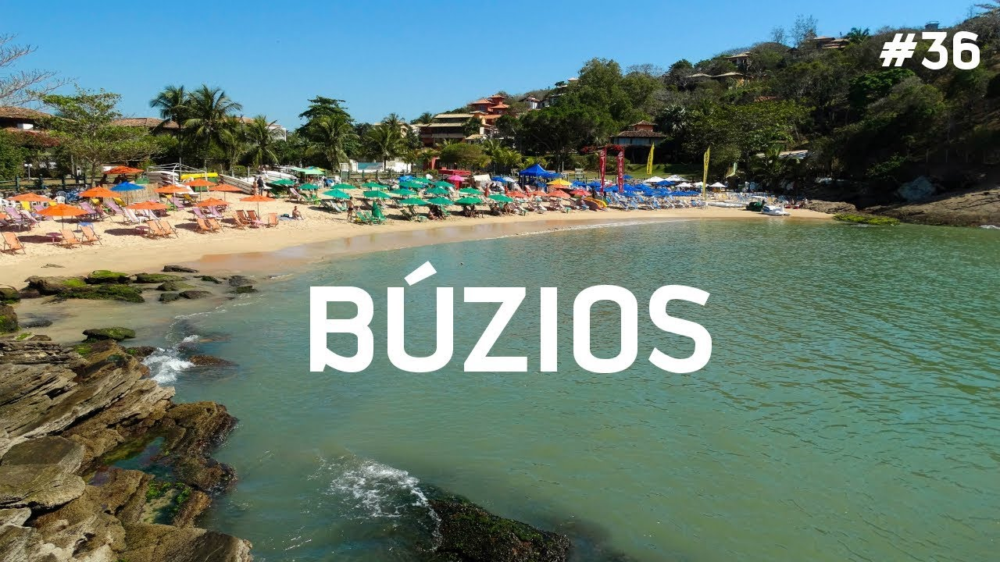
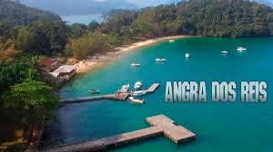
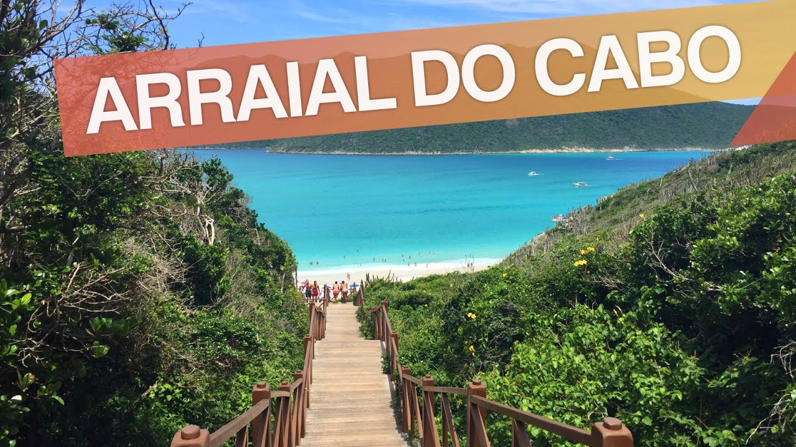

Búzios
Armação dos Búzios, ou apenas Búzios, como é popularmente conhecido, é um município da Microrregião dos Lagos, no estado do Rio de Janeiro, no Brasil. Faz divisa a oeste com Cabo Frio, município do qual se tornou autônomo em 1995. Localiza-se a cerca de 173 quilômetros do centro da capital do estado.O clima da cidade é tropical tipo (Aw) com verões quentes e úmidos e invernos amenos e mais secos que fora da Região dos Lagos, pois as rajadas de vento dispersam a maioria das nuvens e frentes frias para o interior do estado. Búzios conta com dias quentes, atenuados pelos ventos constantes procedentes do Oceano Atlântico, mas sua temperatura no verão raramente passa dos 34 °C. As noites são amenas e não tão abafadas como na capital do estado, pois são atenuadas pelos intensos e duradouros ventos da chamada "Região Dispersora de Ventos", local este onde jaz toda a Região dos Lagos Fluminense. O mês mais quente é o mês de fevereiro com média de 25 °C e o mês mais frio é o mês de setembro com média de 19,5 °C. O mês mais seco é o mês de agosto com apenas 37 mm de precipitação e o mais chuvoso é dezembro com aproximadamente 130 mm de chuva.
Angra Dos Reis
Angra dos Reis é um município brasileiro situado no sul do estado do Rio de Janeiro. Localiza-se a uma altitude média de seis metros e possui, em seu litoral, 365 ilhas.[7] Antes da chegada dos europeus, era habitada por tribos indígenas tupinambás. Foi descoberta pelos portugueses em 6 de janeiro de 1502, sendo colonizada apenas a partir de 1556. Sua população estimada em 2017 pelo IBGE, era de 194 619 habitantes.[8] Possui uma área de 816,3 km². Os municípios limítrofes são Parati, Rio Claro e Mangaratiba, no território fluminense e Bananal e São José do Barreiro, no lado paulista.A maior parte da cidade é cercada por morros, o que contribuiu para que, no início de 2010, várias residências e pousadas sofressem com os efeitos de deslizamentos [9] principalmente na Ilha Grande.[10][11]. Segundo o censo 2010, em Angra cerca de 36% de sua população vive em favelas, situados em morros ou áreas de mangues. Isto coloca o município em décimo lugar das cidades brasileiras, no que tange a proporção de domicílios nesse tipo de aglomeração urbana do país.[12]
Arraial do Cabo
Arraial do Cabo é um município brasileiro da Região dos Lagos, no estado do Rio de Janeiro. A cidade é costeira, e tem uma altitude média de apenas oito metros. Fundado em 1503 pelo conquistador Américo Vespúcio, foi elevado a município apenas em 1985, após a emancipação de Cabo Frio. Em 2014 tinha uma população de 28 866 habitantes segundo o IBGE. As rodovias que servem o município são a RJ-140/BR-120 e a RJ-102. A cidade de Arraial do Cabo, como o nome indica é realmente um cabo, um pedaço de terra grande (superior ao pontal e ponta) adentrando ao mar, possui pequena diversidade de praias em enseadas, entre estas pode se considerar que estão algumas das praias mais belas do mundo. A cidade abriga o Porto do Forno que na verdade é uma marina de três píers por onde entram produtos para a cidade e saem as produções de sal. Ideal para a prática de mergulho, o ecoturismo é a base da economia cabista, não aproveitando-se a região para o desenvolvimento de aquacultura e maricultura.[7] Tendo ainda uma zona urbana bastante simples e conturbada, com construções de apenas dois andares em ruas sinuosas e estreitas.[8]
